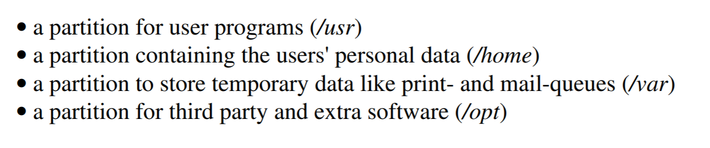
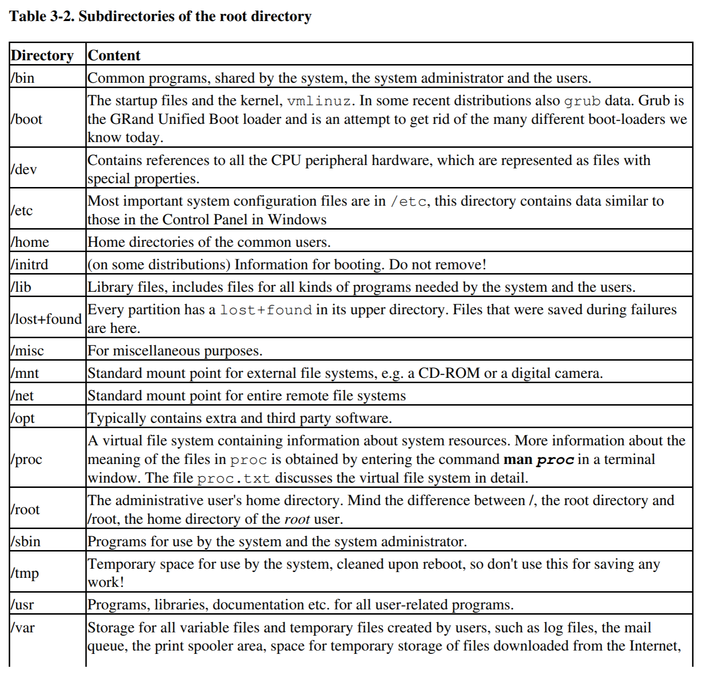

<!DOCTYPE html>


<html lang="en">


<head>
  <meta charset="utf-8" />
    
  <meta name="viewport" content="width=device-width, initial-scale=1, maximum-scale=1" />
  <title>
    Linux002 Bash基础 |  
  </title>
  <meta name="generator" content="hexo-theme-ayer">
  
  <link rel="shortcut icon" href="/osa.png" />
  
  
<link rel="stylesheet" href="/dist/main.css">

  
<link rel="stylesheet" href="https://cdn.jsdelivr.net/gh/Shen-Yu/cdn/css/remixicon.min.css">

  
<link rel="stylesheet" href="/css/custom.css">

  
  
<script src="https://cdn.jsdelivr.net/npm/pace-js@1.0.2/pace.min.js"></script>

  
  

  

</head>

</html>

<body>
  <div id="app">
    
      
      <canvas width="1777" height="841"
        style="position: fixed; left: 0px; top: 0px; z-index: 99999; pointer-events: none;"></canvas>
      
    <main class="content on">
      <section class="outer">
  <article
  id="post-tutorials/Linux/Linux002"
  class="article article-type-post"
  itemscope
  itemprop="blogPost"
  data-scroll-reveal
>
  <div class="article-inner">
    
    <header class="article-header">
       
<h1 class="article-title sea-center" style="border-left:0" itemprop="name">
  Linux002 Bash基础
</h1>
 

    </header>
     
    <div class="article-meta">
      <a href="/2019/11/13/tutorials/Linux/Linux002/" class="article-date">
  <time datetime="2019-11-13T07:20:43.000Z" itemprop="datePublished">2019-11-13</time>
</a> 
  <div class="article-category">
    <a class="article-category-link" href="/categories/Tutorials/">Tutorials</a> / <a class="article-category-link" href="/categories/Tutorials/Linux/">Linux</a>
  </div>
  
<div class="word_count">
    <span class="post-time">
        <span class="post-meta-item-icon">
            <i class="ri-quill-pen-line"></i>
            <span class="post-meta-item-text"> Word count:</span>
            <span class="post-count">2.5k</span>
        </span>
    </span>

    <span class="post-time">
        &nbsp; | &nbsp;
        <span class="post-meta-item-icon">
            <i class="ri-book-open-line"></i>
            <span class="post-meta-item-text"> Reading time≈</span>
            <span class="post-count">8 min</span>
        </span>
    </span>
</div>
 
    </div>
      
    <div class="tocbot"></div>


  
    <div class="article-entry" itemprop="articleBody">
       
  <h1 id="Bash的基本使用"><a href="#Bash的基本使用" class="headerlink" title="Bash的基本使用"></a>Bash的基本使用</h1><blockquote>
<p>在前面我们完成了Linux系统的基本安装，有的操作系统（如Ubuntu Manjaro Debian等）有 完整的图形界面 和 各种各样的 <code>GUI（Graphical User Interface，简称 GUI，又称图形用户接口）</code>工具。我们一下就能联想到windows的操作方式，所以你能快速上手这种linux发行版。但是，Linux真正的魅力在于一个看起来十分简陋，功能却异常强大的不起眼的小应用程序——Shell.本节我们就讲讲目前几乎所有发行版都预装的Shell的一种——<code>Bash Shell</code>。  </p>
</blockquote>
<p>我们不讲各个发行版是怎样开机，登录的具体使用步骤，我相信你们有能力自己完成这些简单的click动作。</p>
<a id="more"></a>

<h2 id="我们先说说Shell"><a href="#我们先说说Shell" class="headerlink" title="我们先说说Shell"></a>我们先说说Shell</h2><p>我们先直接抛出<code>shell</code>的定义，来源参考百度百科。</p>
<p><code>shell</code> 是文字操作系统与外部最主要的接口。它是操作系统最外面的一层。shell管理你与<code>操作系统</code>之间的交互：等待你输入，向操作系统解释你的输入，并且处理各种各样的操作系统的输出结果。（还记得我们第一节课讲的操作系统就是一个<strong>翻译官</strong>吗？ 他其实更像一个大独裁者。Shell 是他的眼睛，耳朵，鼻子，嘴巴）。<br>我们给 操作系统（一个翻译官） 说我们想要干嘛，比如我们说 “播放我存放在d盘的电影《大话西游》”。这个翻译官通过耳朵（Shell）“听到”了我们的话，然后他就命令计算机说：</p>
<blockquote>
<p>“##%@￥&amp;￥%@￥%#<em>&amp;￥……%#&amp;￥@￥#…………&amp;*￥#……￥&amp;@@%？?&gt;{:&lt;?”|}}{::&gt;?++_</em>&amp;$#%%!~!*(((&amp;%@!!” （此处省略10k个字符）</p>
</blockquote>
<p>来，让我给你翻译一下，就是 </p>
<blockquote>
<p>“去，把你磁盘上9527区的007到008分段的数据传输给 爱奇艺 ，爱奇艺，我再给你调用2个cpu的权限，你给我把画面播放到那个显示器上。”</p>
</blockquote>
<p>总结一下，就是 操作系统通过耳朵（Shell）听我们给他的命令，然后他去用只有计算机硬件懂得的语言（当然我也懂，不然你就看不到上面那段人性化的翻译了）去命令计算机该怎么做。这些cpu，磁盘，显示器，音响都是操作系统的小弟，全由操作系统指挥。</p>
<p>其实Shell不仅仅是去”听”，他同时也能输出。在后续的实际操作我会给大家演示。</p>
<p><code>Shell</code>大概就是这样，他是操作系统的最外部一层，用来管理我们和操作系统之间的交互。如果不把计算机内部细化。Shell也就是直接 <strong><em>管理人和机器的交互</em></strong> 的工具</p>
<p>Shell到后来又有了很多不同的版本出来，比如现在很出名的bash，zsh，其他的还有诸如sh，ksh，csh等等，你也可以在一个linux系统上安装很多不同的shell，不过今天我们不在这儿说怎样更换。因为还需一些其他的基础知识，不过我们还没有提。所以先缓缓。。</p>
<blockquote>
<p>很有必要讲一讲的是，shell和GUI的关系，要知道shell是早于GUI桌面应用很早很早之前就出来了的。你的电脑能做的事，都可以通过shell做到，而你的GUI桌面则不然，所以说，Shell的能力是&gt;&gt;&gt;&gt;GUI桌面的。学习shell也就很重要了。</p>
</blockquote>
<h2 id="Bash"><a href="#Bash" class="headerlink" title="$ Bash"></a>$ Bash</h2><p>Bash啊，他是Shell的一种，目前的绝大多数Linux发行版都把Bash作为默认Shell。Bash的功能也比sh（shell的第一个版本）强大很多。</p>
<blockquote>
<p>在图形界面完备的Linux发行版中（如Ubuntu），你需要打开叫做<code>Terminal</code>(终端)的应用程序来操作Shell。</p>
<p>简述：终端干的活儿是从用户这里接收输入（键盘、鼠标等输入设备），扔给 Shell，然后把 Shell 返回的结果展示给用户（比如通过显示器）。而 Shell 干的活儿是从终端那里拿到用户输入的命令，解析后交给操作系统内核去执行，并把执行结果返回给终端。更多内容，包括 terminal Shell tty 之间的联系和差别，<a href="https://www.cnblogs.com/sddai/p/9769086.html" target="_blank" rel="noopener">请移步此链接</a></p>
</blockquote>
<p>Bash和其他shell看起来差不多相同，黑底白字，偶尔出现漂亮鲜艳的红色（你绝对不会喜欢bash下出现红色的字的）。他大概长这样子，你看到的这整个框体就是terminal，里面的内容就是Bash了。</p>
<p></p>
<p>我们来看他的组成</p>
<figure class="highlight shell"><table><tr><td class="gutter"><pre><span class="line">1</span><br></pre></td><td class="code"><pre><span class="line">vvenzhou@ubuntu:~$</span><br></pre></td></tr></table></figure>
<p>前面第一个字符串<code>vvenzhou</code>是你登陆的用户名</p>
<ul>
<li><strong>@</strong> 符号后面的<code>ubuntu</code>是你的计算机hostname，也就是计算机名</li>
<li><strong>：</strong> 后面的是shell现在所处的目录位置（这里的<code>~</code>就是指当前的用户目录）</li>
<li><strong>$</strong>  后面就是你输入shell命令的地方</li>
</ul>
<h3 id="初识命令（command）"><a href="#初识命令（command）" class="headerlink" title="初识命令（command）"></a>初识命令（command）</h3><p>下面有一些常用的shell命令（我相信你们都能看懂初中英语吧）<br><br>我们试着输入一些命令，看看shell有什么反应</p>
<figure class="highlight shell"><table><tr><td class="gutter"><pre><span class="line">1</span><br></pre></td><td class="code"><pre><span class="line">vvenzhou@ubuntu:~$ ls</span><br></pre></td></tr></table></figure>
<p></p>
<p><code>ls</code>命令表示显示出当前目录下的文件。还记得当前目录是怎么看的吗？</p>
<p>一般的，一个新的Linux系统会自动在用户目录下创建好这么几个目录（windows下叫做文件夹）（folder）。</p>
<p>shell命令有的只需要单独command名就行了，如上面的<code>ls</code>，然而还可以在后面带上参数（arguments），<strong><em>命令和参数之间用空格分开</em></strong> 。比如</p>
<figure class="highlight shell"><table><tr><td class="gutter"><pre><span class="line">1</span><br></pre></td><td class="code"><pre><span class="line">vvenzhou@ubuntu:~$ ls Pictures</span><br></pre></td></tr></table></figure>
<p></p>
<p>这表明 显示 <em>当前目录</em> 下的 <em>Pictures</em>目录下的文件。即 <code>~/Pictures/</code><br>你也可以直接跟一个完整的路径</p>
<figure class="highlight shell"><table><tr><td class="gutter"><pre><span class="line">1</span><br></pre></td><td class="code"><pre><span class="line">vvenzhou@ubuntu:~$ ls ~/Pictures</span><br></pre></td></tr></table></figure>
<p></p>
<p>如果路径不正确（目录不存在）呢？</p>
<figure class="highlight shell"><table><tr><td class="gutter"><pre><span class="line">1</span><br></pre></td><td class="code"><pre><span class="line">vvenzhou@ubuntu:~$ ls ~/Pict</span><br></pre></td></tr></table></figure>
<p></p>
<p>shell会返回错误信息。</p>
<p>然而<code>ls</code>还能做更多的东西，你可以在命令后面加指定的option来实现更多的功能，试试在 <code>ls</code> 后面加上 <code>-a</code> （缩写） 或者 <code>--all</code> （全称）<br><strong><em>同理，command option argument之间都要用空格分开</em></strong></p>
<figure class="highlight shell"><table><tr><td class="gutter"><pre><span class="line">1</span><br></pre></td><td class="code"><pre><span class="line">vvenzhou@ubuntu:~$ ls -a</span><br></pre></td></tr></table></figure>
<p></p>
<p>看！他显示了更多的东西。不仅有那些目录，还有更多的其他东西。<br><code>ls</code> 默认只显示那些不是<code>.</code>开头的文件和目录。但是你可以加上<code>-a</code> option来告诉<code>ls</code>你想看到更多。</p>
<p>你还可以把好多option写在一起，试试用<code>ls -al</code>代替<code>ls -a -l</code>。</p>
<figure class="highlight shell"><table><tr><td class="gutter"><pre><span class="line">1</span><br></pre></td><td class="code"><pre><span class="line">vvenzhou@ubuntu:~$ ls -al</span><br></pre></td></tr></table></figure>
<p><br>（至于-l option的作用我暂时不讲）</p>
<p>这些就是命令（command）的基本使用方法。现在去自己的Linux上试试上面那个表中的命令吧，更多命令及使用方法<a href="https://osa-null.github.io/[object%20Object]/Linux/Linux_general/">请移步本系列教程的另一个帖子</a>。<strong>注意要细心观察输入了命令后的种种变化</strong>。</p>
<p>如果你不知道某个命令该怎么用，有哪些option，需要什么argument，请使用<code>man</code> 命令，如<code>man ls</code> <code>man man</code>。要退出 man 请注意终端下方的高亮提示。</p>
<p>Linux是个高度自由的操作系统，也请大家多多锻炼动手能力，自己发现错误，找到错误，解决错误的过程才是你真正学习Linux知识的时候。</p>
<p>Linux学习之路的3条建议</p>
<ul>
<li>善用man命令</li>
<li>善用 <a href="https://www.baidu.com" target="_blank" rel="noopener">Baidu</a> <a href="https://www.bing.com" target="_blank" rel="noopener">Bing</a> 以及<a href="https://www.google.com" target="_blank" rel="noopener">某404网站</a>。</li>
<li>学好英语</li>
</ul>
<p>如果你去各个渠道都找不到解决办法，欢迎来找我或者其他人，虽然我肯定也不会（你在网上都找不到了，我也一定找不到），但我们可以一起来尝试解决它。交流出真知，别忘了，我们有强大的开源社区！！！</p>
<blockquote>
<p>more tips：shell可以运行的不仅仅是一些自带命令哦，所有可执行文件（通俗的说就是应用程序）都可以通过shell打开。</p>
</blockquote>
<h3 id="One-more-thing"><a href="#One-more-thing" class="headerlink" title="One more thing"></a>One more thing</h3><p>上面讲的那些我相信大家都很容易就明白了，而且确实也不难，不如我们就再加一点点料，补充一点理论知识。我们就讲讲Linux的文件系统，这就涉及到了Linux的一个理念——<strong><em>万物皆是文件</em></strong></p>
<h4 id="Everything-is-a-file"><a href="#Everything-is-a-file" class="headerlink" title="Everything is a file"></a>Everything is a file</h4><blockquote>
<p>“On a UNIX system, everything is a file; if something is not a file, it is a process.”</p>
</blockquote>
<p>Linux 中所有内容都是以文件的形式保存和管理的，即一切皆文件，普通文件是文件，目录（Windows 下称为文件夹）是文件，硬件设备（键盘、监视器、硬盘、打印机）是文件，就连套接字（socket）、网络通信等资源也都是文件。</p>
<p>那么问题来了，要如何来管理这些庞大的各类文件呢？</p>
<p>树！</p>
<p>树其实很简单，就是长得像树的一种文件系统，首先是根目录<code>/</code>，这是唯一的，你可以理解成所有目录的老大，没有谁能在他之上（之前）了。根目录下面便是各类子目录，具体见下图。</p>
<p></p>
<p>每个目录都有他们特定的功能，比如<br></p>
<p>记得<code>~</code>这个地址吗？如果我登录的用户名是<code>wenzhou</code>，那么这个波浪线的完整地址其实就是<code>/home/wenzhou/</code>，那里就是存我这个用户的资料的，比如我下载了什么电影，音乐，电子书，都应该放在自己的用户目录下，以免造成磁盘文件的混乱。</p>
<blockquote>
<p>如果你想要知道你当前所在目录的完整地址，除了看shell前面的那一坨东西之外，也可以用<code>pwd</code>命令来查看，去试试。</p>
</blockquote>
<blockquote>
<p>还有，注意<code>/root</code>和<code>/</code>，他两肯定不一样，但是我们读起来都是读的 “gen mu lu” ，要注意区分他俩，别混淆了。</p>
</blockquote>
<p>更多的细节：（我就不翻译了）<br></p>
<p>Well, bash基础和Linux文件系统大概就讲这些，更具体的可以查看我们发到群里的intro-linx.pdf获取更多知识。</p>
<p>goodbye！</p>
 
      <!-- reward -->
      
    </div>
    

    <!-- copyright -->
    
    <div class="declare">
      <ul class="post-copyright">
        <li>
          <i class="ri-copyright-line"></i>
          <strong>Copyright： </strong>
          Copyright is owned by the author. For commercial reprints, please contact the author for authorization. For non-commercial reprints, please indicate the source.
        </li>
      </ul>
    </div>
    
    <footer class="article-footer">
       
<div class="share-btn">
      <span class="share-sns share-outer">
        <i class="ri-share-forward-line"></i>
        分享
      </span>
      <div class="share-wrap">
        <i class="arrow"></i>
        <div class="share-icons">
          
          <a class="weibo share-sns" href="javascript:;" data-type="weibo">
            <i class="ri-weibo-fill"></i>
          </a>
          <a class="weixin share-sns wxFab" href="javascript:;" data-type="weixin">
            <i class="ri-wechat-fill"></i>
          </a>
          <a class="qq share-sns" href="javascript:;" data-type="qq">
            <i class="ri-qq-fill"></i>
          </a>
          <a class="douban share-sns" href="javascript:;" data-type="douban">
            <i class="ri-douban-line"></i>
          </a>
          <!-- <a class="qzone share-sns" href="javascript:;" data-type="qzone">
            <i class="icon icon-qzone"></i>
          </a> -->
          
          <a class="facebook share-sns" href="javascript:;" data-type="facebook">
            <i class="ri-facebook-circle-fill"></i>
          </a>
          <a class="twitter share-sns" href="javascript:;" data-type="twitter">
            <i class="ri-twitter-fill"></i>
          </a>
          <a class="google share-sns" href="javascript:;" data-type="google">
            <i class="ri-google-fill"></i>
          </a>
        </div>
      </div>
</div>

<div class="wx-share-modal">
    <a class="modal-close" href="javascript:;"><i class="ri-close-circle-line"></i></a>
    <p>扫一扫，分享到微信</p>
    <div class="wx-qrcode">
      
    </div>
</div>

<div id="share-mask"></div>  
    </footer>
  </div>

   
  <nav class="article-nav">
    
      <a href="/2019/11/15/tutorials/Linux/Linux003/" class="article-nav-link">
        <strong class="article-nav-caption">上一篇</strong>
        <div class="article-nav-title">
          
            Linux003 Linux文件系统
          
        </div>
      </a>
    
    
      <a href="/2019/11/13/tutorials/Linux/Linux001/" class="article-nav-link">
        <strong class="article-nav-caption">下一篇</strong>
        <div class="article-nav-title">Linux001 Linux简介</div>
      </a>
    
  </nav>

  
     
</article>

</section>
      <footer class="footer">
  <div class="outer">
    <ul>
      <li>
        Copyrights &copy;
        2020
        <i class="ri-heart-fill heart_icon"></i> OSA-NULL
      </li>
    </ul>
    <ul>
      <li>
        
        
        
        Powered by <a href="https://hexo.io" target="_blank">Hexo</a>
        <span class="division">|</span>
        Theme - <a href="https://github.com/Shen-Yu/hexo-theme-ayer" target="_blank">Ayer</a>
        
      </li>
    </ul>
    <ul>
      <li>
        
      </li>
    </ul>
    <ul>
      
    </ul>
    <ul>
      <li>
        <!-- cnzz统计 -->
        
      </li>
    </ul>
  </div>
</footer>
      <div class="float_btns">
        <div class="totop" id="totop">
  <i class="ri-arrow-up-line"></i>
</div>

<div class="todark" id="todark">
  <i class="ri-moon-line"></i>
</div>

      </div>
    </main>
    <aside class="sidebar on">
      <button class="navbar-toggle"></button>
<nav class="navbar">
  
  <div class="logo">
    <a href="/"></a>
  </div>
  
  <ul class="nav nav-main">
    
    <li class="nav-item">
      <a class="nav-item-link" href="/">主页</a>
    </li>
    
    <li class="nav-item">
      <a class="nav-item-link" href="/categories/Tutorials">教程</a>
    </li>
    
    <li class="nav-item">
      <a class="nav-item-link" href="/categories/News">每周咨询</a>
    </li>
    
    <li class="nav-item">
      <a class="nav-item-link" href="/projects">协会项目</a>
    </li>
    
    <li class="nav-item">
      <a class="nav-item-link" href="/ideas">Idea库</a>
    </li>
    
    <li class="nav-item">
      <a class="nav-item-link" href="/categories">分类</a>
    </li>
    
    <li class="nav-item">
      <a class="nav-item-link" href="/tags">标签</a>
    </li>
    
    <li class="nav-item">
      <a class="nav-item-link" href="/archives">归档</a>
    </li>
    
    <li class="nav-item">
      <a class="nav-item-link" href="/about">关于我们</a>
    </li>
    
  </ul>
</nav>
<nav class="navbar navbar-bottom">
  <ul class="nav">
    <li class="nav-item">
      
      
    </li>
  </ul>
</nav>
<div class="search-form-wrap">
  <div class="local-search local-search-plugin">
  <input type="search" id="local-search-input" class="local-search-input" placeholder="Search...">
  <div id="local-search-result" class="local-search-result"></div>
</div>
</div>
    </aside>
    <script>
      if (window.matchMedia("(max-width: 768px)").matches) {
        document.querySelector('.content').classList.remove('on');
        document.querySelector('.sidebar').classList.remove('on');
      }
    </script>
    <div id="mask"></div>

<!-- #reward -->
<div id="reward">
  <span class="close"><i class="ri-close-line"></i></span>
  <p class="reward-p"><i class="ri-cup-line"></i></p>
  <div class="reward-box">
    
    
  </div>
</div>
    
<script src="/js/jquery-2.0.3.min.js"></script>


<script src="/js/lazyload.min.js"></script>

<!-- Tocbot -->


<script src="/js/tocbot.min.js"></script>

<script>
  tocbot.init({
    tocSelector: '.tocbot',
    contentSelector: '.article-entry',
    headingSelector: 'h1, h2, h3, h4, h5, h6',
    hasInnerContainers: true,
    scrollSmooth: true,
    scrollContainer: 'main',
    positionFixedSelector: '.tocbot',
    positionFixedClass: 'is-position-fixed',
    fixedSidebarOffset: 'auto'
  });
</script>

<script src="https://cdn.jsdelivr.net/npm/jquery-modal@0.9.2/jquery.modal.min.js"></script>
<link rel="stylesheet" href="https://cdn.jsdelivr.net/npm/jquery-modal@0.9.2/jquery.modal.min.css">
<script src="https://cdn.jsdelivr.net/npm/justifiedGallery@3.7.0/dist/js/jquery.justifiedGallery.min.js"></script>

<script src="/dist/main.js"></script>

<!-- ImageViewer -->

<!-- Root element of PhotoSwipe. Must have class pswp. -->
<div class="pswp" tabindex="-1" role="dialog" aria-hidden="true">

    <!-- Background of PhotoSwipe. 
         It's a separate element as animating opacity is faster than rgba(). -->
    <div class="pswp__bg"></div>

    <!-- Slides wrapper with overflow:hidden. -->
    <div class="pswp__scroll-wrap">

        <!-- Container that holds slides. 
            PhotoSwipe keeps only 3 of them in the DOM to save memory.
            Don't modify these 3 pswp__item elements, data is added later on. -->
        <div class="pswp__container">
            <div class="pswp__item"></div>
            <div class="pswp__item"></div>
            <div class="pswp__item"></div>
        </div>

        <!-- Default (PhotoSwipeUI_Default) interface on top of sliding area. Can be changed. -->
        <div class="pswp__ui pswp__ui--hidden">

            <div class="pswp__top-bar">

                <!--  Controls are self-explanatory. Order can be changed. -->

                <div class="pswp__counter"></div>

                <button class="pswp__button pswp__button--close" title="Close (Esc)"></button>

                <button class="pswp__button pswp__button--share" style="display:none" title="Share"></button>

                <button class="pswp__button pswp__button--fs" title="Toggle fullscreen"></button>

                <button class="pswp__button pswp__button--zoom" title="Zoom in/out"></button>

                <!-- Preloader demo http://codepen.io/dimsemenov/pen/yyBWoR -->
                <!-- element will get class pswp__preloader--active when preloader is running -->
                <div class="pswp__preloader">
                    <div class="pswp__preloader__icn">
                        <div class="pswp__preloader__cut">
                            <div class="pswp__preloader__donut"></div>
                        </div>
                    </div>
                </div>
            </div>

            <div class="pswp__share-modal pswp__share-modal--hidden pswp__single-tap">
                <div class="pswp__share-tooltip"></div>
            </div>

            <button class="pswp__button pswp__button--arrow--left" title="Previous (arrow left)">
            </button>

            <button class="pswp__button pswp__button--arrow--right" title="Next (arrow right)">
            </button>

            <div class="pswp__caption">
                <div class="pswp__caption__center"></div>
            </div>

        </div>

    </div>

</div>

<link rel="stylesheet" href="https://cdn.jsdelivr.net/npm/photoswipe@4.1.3/dist/photoswipe.min.css">
<link rel="stylesheet" href="https://cdn.jsdelivr.net/npm/photoswipe@4.1.3/dist/default-skin/default-skin.min.css">
<script src="https://cdn.jsdelivr.net/npm/photoswipe@4.1.3/dist/photoswipe.min.js"></script>
<script src="https://cdn.jsdelivr.net/npm/photoswipe@4.1.3/dist/photoswipe-ui-default.min.js"></script>

<script>
    function viewer_init() {
        let pswpElement = document.querySelectorAll('.pswp')[0];
        let $imgArr = document.querySelectorAll(('.article-entry img:not(.reward-img)'))

        $imgArr.forEach(($em, i) => {
            $em.onclick = () => {
                // slider展开状态
                // todo: 这样不好，后面改成状态
                if (document.querySelector('.left-col.show')) return
                let items = []
                $imgArr.forEach(($em2, i2) => {
                    let img = $em2.getAttribute('data-idx', i2)
                    let src = $em2.getAttribute('data-target') || $em2.getAttribute('src')
                    let title = $em2.getAttribute('alt')
                    // 获得原图尺寸
                    const image = new Image()
                    image.src = src
                    items.push({
                        src: src,
                        w: image.width || $em2.width,
                        h: image.height || $em2.height,
                        title: title
                    })
                })
                var gallery = new PhotoSwipe(pswpElement, PhotoSwipeUI_Default, items, {
                    index: parseInt(i)
                });
                gallery.init()
            }
        })
    }
    viewer_init()
</script>

<!-- MathJax -->

<!-- Katex -->

<!-- busuanzi  -->

<!-- ClickLove -->

<!-- ClickBoom1 -->

<!-- ClickBoom2 -->


<script src="/js/clickBoom2.js"></script>


<!-- CodeCopy -->


<link rel="stylesheet" href="/css/clipboard.css">

<script src="https://cdn.jsdelivr.net/npm/clipboard@2/dist/clipboard.min.js"></script>
<script>
  function wait(callback, seconds) {
    var timelag = null;
    timelag = window.setTimeout(callback, seconds);
  }
  !function (e, t, a) {
    var initCopyCode = function(){
      var copyHtml = '';
      copyHtml += '<button class="btn-copy" data-clipboard-snippet="">';
      copyHtml += '<i class="ri-file-copy-2-line"></i><span>COPY</span>';
      copyHtml += '</button>';
      $(".highlight .code pre").before(copyHtml);
      $(".article pre code").before(copyHtml);
      var clipboard = new ClipboardJS('.btn-copy', {
        target: function(trigger) {
          return trigger.nextElementSibling;
        }
      });
      clipboard.on('success', function(e) {
        let $btn = $(e.trigger);
        $btn.addClass('copied');
        let $icon = $($btn.find('i'));
        $icon.removeClass('ri-file-copy-2-line');
        $icon.addClass('ri-checkbox-circle-line');
        let $span = $($btn.find('span'));
        $span[0].innerText = 'COPIED';
        
        wait(function () { // 等待两秒钟后恢复
          $icon.removeClass('ri-checkbox-circle-line');
          $icon.addClass('ri-file-copy-2-line');
          $span[0].innerText = 'COPY';
        }, 2000);
      });
      clipboard.on('error', function(e) {
        e.clearSelection();
        let $btn = $(e.trigger);
        $btn.addClass('copy-failed');
        let $icon = $($btn.find('i'));
        $icon.removeClass('ri-file-copy-2-line');
        $icon.addClass('ri-time-line');
        let $span = $($btn.find('span'));
        $span[0].innerText = 'COPY FAILED';
        
        wait(function () { // 等待两秒钟后恢复
          $icon.removeClass('ri-time-line');
          $icon.addClass('ri-file-copy-2-line');
          $span[0].innerText = 'COPY';
        }, 2000);
      });
    }
    initCopyCode();
  }(window, document);
</script>


<!-- CanvasBackground -->


<script src="/js/dz.js"></script>


    
  </div>
</body>

</html>